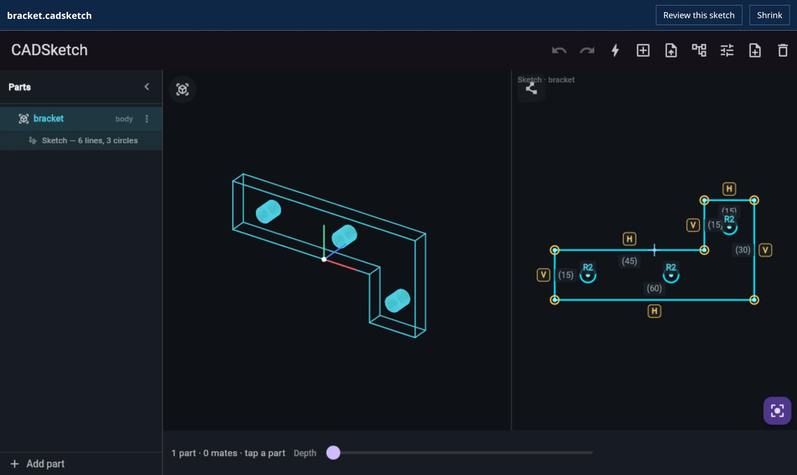
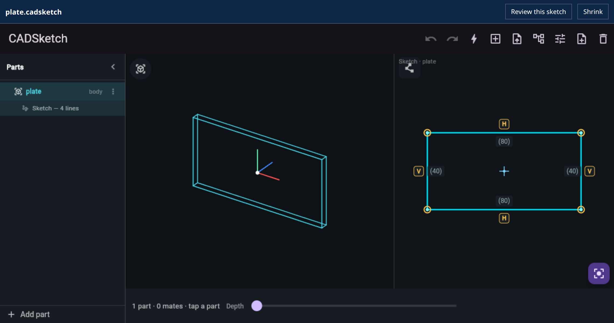
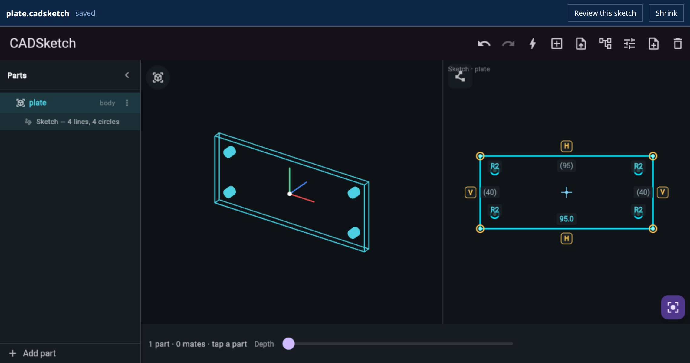

CADSketch is our sketch-first CAD editor: draw a rough shape and it snaps to clean, constrained, dimensioned geometry, then extrudes to a part. It ships on the App Store and runs in the browser. As of today it is also a plugin for Codex and the ChatGPT desktop app.
The plugin does three things. It puts the editor in the app's sidebar. It opens .cadsketch and .dxf files from your workspace in that editor. And it gives the agent 18 tools that act on the sketch you have open, so "make it 95 mm wide and add a hole in each corner" changes the part in front of you, one undo step at a time.

Install
You need Node.js 18 or later and a recent Codex. Node is there because the app runs the plugin's server on your own machine. We tested with Codex 0.157 and the ChatGPT desktop app, which is available for macOS and Windows and in preview for Linux.
codex plugin marketplace add punkfab/cadsketch
codex plugin add cadsketch@cadsketchRestart the desktop app. CADSketch appears in the sidebar. There is nothing to build and no account to create: the plugin's server is one bundled file that the app starts on your machine.
Three things to try:
- Click CADSketch in the sidebar and draw a rough rectangle. It straightens, closes and extrudes.
- In a project folder, ask: "Create bracket.cadsketch for a 60 × 30 mm L-bracket, 5 mm thick, with three M4 holes." Then open the file.
- With the file open: "Make it 8 mm thick and move the holes 2 mm further from the edges."
What you get
| Where | What |
|---|---|
| Sidebar | the editor as a full tab, next to a conversation |
| Thread | the editor as a panel beside the conversation you are in |
| Files | .cadsketch and .dxf open in the editor instead of as text |
| Agent | 18 tools on the open sketch, a drawing tool, a headless checker, and a skill that teaches the workflow |
The file
A .cadsketch file is the part as plain JSON. Millimetres, X right, Y up. The outline closes itself, and a hole is a centre and a radius.
{
"cadsketch": 1,
"units": "mm",
"parts": [
{ "name": "bracket", "depth": 5,
"profile": [[0,0],[60,0],[60,30],[45,30],[45,15],[0,15]],
"holes": [[10,7.5,2.25],[35,7.5,2.25],[52.5,22,2.25]] }
]
}The agent writes this with its ordinary file tools. While the file is open in the editor, the two stay in step:
- When the agent changes the file, the editor reloads it.
- When you drag a point, the editor saves the file. It writes with the version it last read, so if the agent changed the file in the meantime you get a reload, not a silent overwrite.
- Opening a file never rewrites it.
- A sketch that is not a closed shape yet is not saved. The editor says so and keeps your work on the canvas.
The agent works in the sketch you have open
The first version could only draw: the agent described a part and the editor showed it. Asking for a small change meant redrawing everything, which threw away any dimensions and constraints you had set. So the editor now publishes its own tools while it is open.
Take a plate and the request "make it 95 mm wide and add an M4 hole 8 mm in from each corner." The two pictures below come from our test host making the calls that request turns into, against the real editor.

That is six calls: get_sketch to read the part and find which edge is the 80 mm one, set_dimension to drive that edge to 95, and add_hole four times.

The bold 95.0 is a driving dimension. It keeps holding through later edits, by you or by the agent. The bar at the top says saved: the change is already in the file.
| To | Tools |
|---|---|
| read | get_sketch, screenshot |
| change geometry | add_hole, move_hole, remove_hole, move_vertex, set_depth |
| state intent | set_dimension, add_constraint, remove_constraint |
| manage parts | add_part, select_part, delete_part, replace_parts |
| step back | undo, redo, fit_view |
| make a file | export_stl |
Each call runs through the same code a tap or a drag does. That makes it one step on the editor's undo stack, and you can undo the agent's edit with the same button you would use for your own. screenshot returns a picture of the editor, for when you say "this corner" and the agent needs to see which one. A wrong index comes back as an instruction, such as vertex must be an index from 0 to 3, so the agent can correct itself.
How it is built
The plugin is an MCP server plus a page the app renders. The page is small. It frames the same web build that runs at cadsketch.ai/app and relays messages to it. There is no second editor, and the phone and browser versions are untouched: the bridge inside the app switches on only when it is opened as a plugin.
The sidebar entry, the thread panel and the file viewer are OpenAI's plugin extensions, three entries of metadata on the server's tools. The editing tools use the open MCP Apps standard, in which a mounted app publishes tools of its own. No AI key ships with the plugin and the server calls no model. The app's own model does the thinking.
What the checks caught
The desktop app's interface does not run in CI, so we wrote a stand-in host that speaks the same protocol and drove the real editor with it. It runs 30 checks. Four problems turned up that reading the code had not:
- A driven rectangle skewed. The first time a tool call drove one side of a plate to 95 mm, the plate became a trapezoid. A part given as coordinates carries no intent, so nothing held the other edges. Parts drawn by an agent now start with horizontal and vertical constraints on their axis-aligned edges, which is what the app already infers from a hand-drawn rectangle. We found this by looking at the output of the screenshot tool.
- A washer came back as a disc. A round part with a hole was reported to the agent as a small disc with no hole. The export code took the last circle drawn as the body. It now takes the largest, which is what the solid builder had been doing all along.
- The editor stalled in one sandbox. A host can sandbox the embedded frame so that it has no origin of its own. The editor's own downloads then count as cross-origin and were refused. One response header on the site fixed it, and the page now reports a reason code if the editor cannot start.
- The app showed a stale page. Hosts cache the plugin's page by its address. An update was invisible until the address changed, so it is now versioned.
Limits
- Parts are flat profiles extruded straight up. No fillets on the extruded edges, no lofts, no revolves.
- A
.cadsketchfile stores geometry only. Constraints and driving dimensions live in the editor session, and horizontal and vertical ones are inferred again when a file reloads. - Arcs an agent sends are stored as short straight edges, so a rounded outline comes back with many vertices.
- The solver converges to about a micron. A side driven to 95 mm can read 94.999 in the saved file.
- We have run the plugin in the ChatGPT desktop app on Linux. The 18 editing tools are verified against the stand-in host, and we have not yet exercised every one of them in the real app.
- It is not in OpenAI's plugin directory yet. That submission is prepared and waiting on review steps. Until then, install it with the two commands above.
What's not new
OpenAI's sample plugin, Bits & Bolts, opens STL and STEP files in a 3D viewer and was our reference for how a plugin is put together. Jake Fitzgerald showed a CAD viewer running as a Codex extension the day extensions shipped, on top of his text-to-cad skills, which generate CAD by writing and running scripts. What we are adding is an editor in place of a viewer: a sketch with constraints and dimensions that you and the agent both change, with the agent's edits landing as ordinary undo steps.
Who did what
We decided what the plugin should do and tried it in the app. Claude read the extension specification, wrote the server, the bridge and the tests, ran them, and found and fixed the four problems above.
The source is public at punkfab/cadsketch, and mcp/README.md covers the tools and the file format in full. Have a part that should be editable by you and your agent at the same time? Start a project →